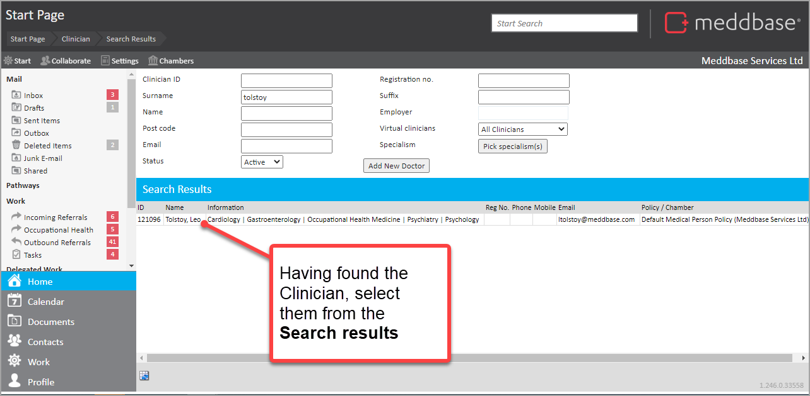
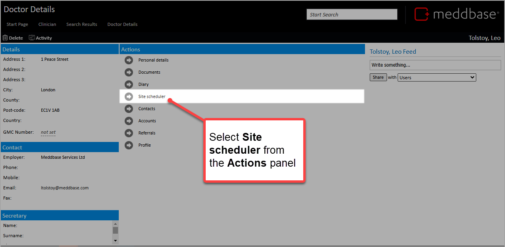
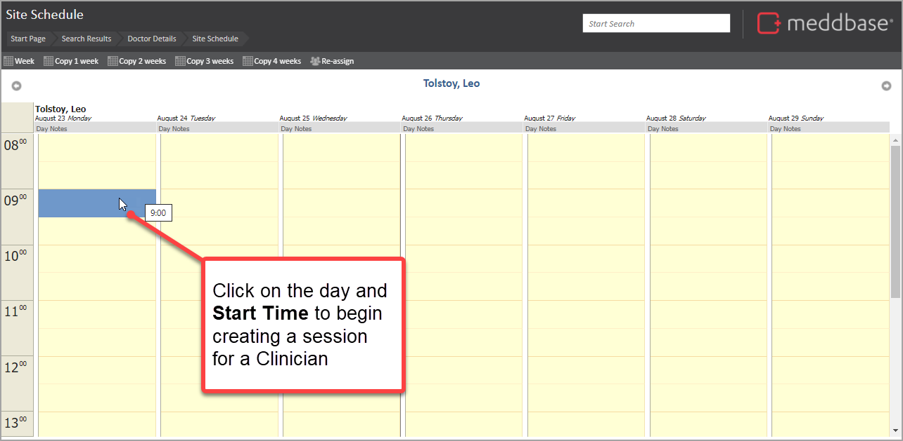
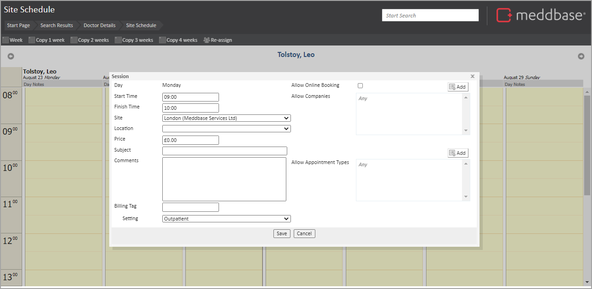
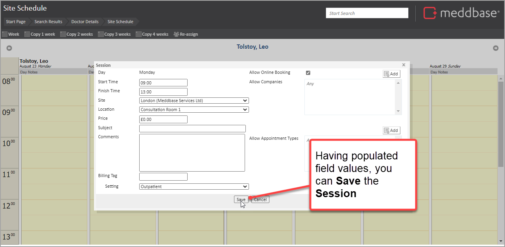
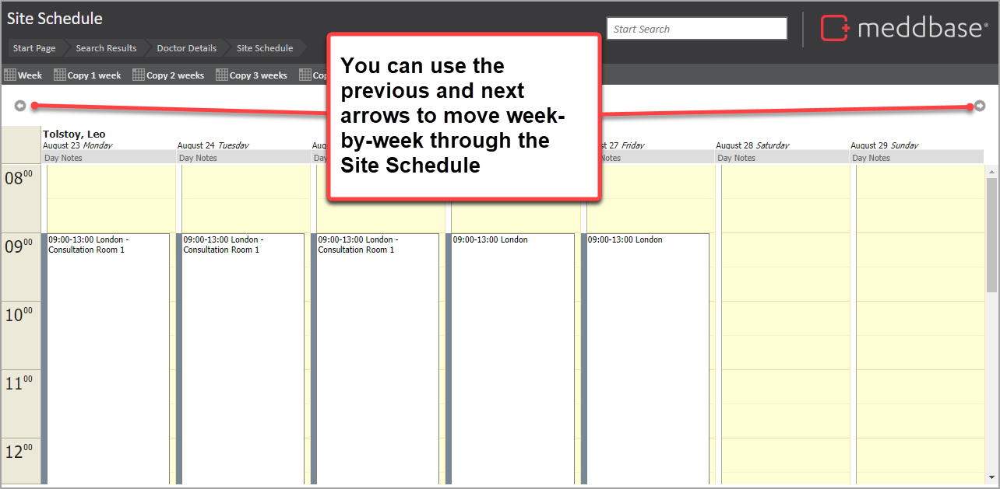
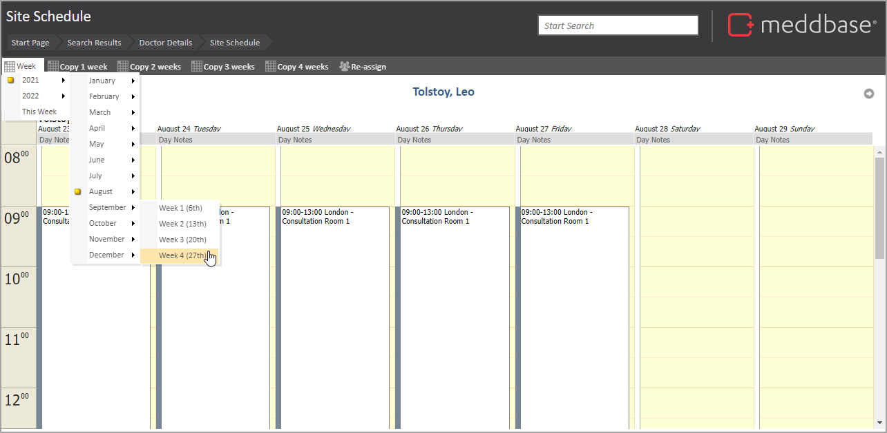
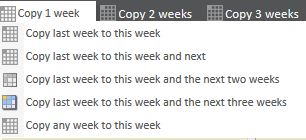
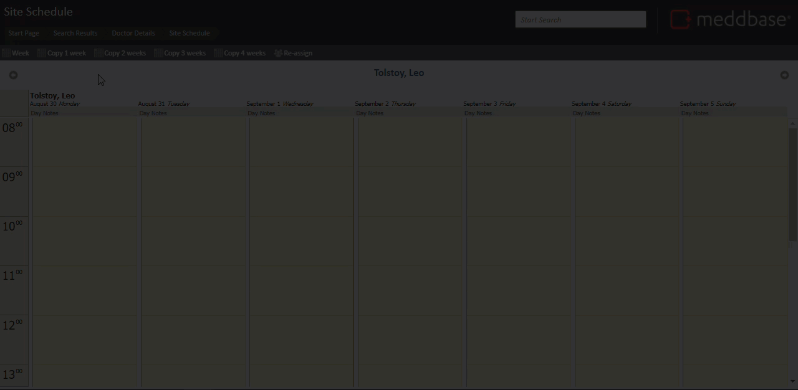

This article outlines the steps needed to set up and customise a Clinician's availability through the Site Scheduler tool.
To be able to book appointments with a Clinician, sessions need to be created in the Site Scheduler. To set up one or more sessions for the Clinician's availability:





Now appointments can be booked in that session in the Clinician's diary.
Further useful points to know about managing session setup are summarised below.
The table below explains the fields shown in the Session dialogue introduced above.
| Field | Explanation |
| Day | Populated automatically from the day selected. This is mandatory. |
| Start Time | The time from which you want the Clinician to be able to accept bookings. This field value is mandatory. |
| Finish Time | The time by which you want the Clinician to have seen and discharged the last patient. (You could list this time to be outside of normal working hours). This field value is mandatory. |
| Site | The Site in which this Clinician will be available to have appointments booked for them. This field value is mandatory. |
| Location | If there is a certain location within the site that this Clinician will be using, you can select from this list. If you do not select a location, then you can assign a location during the booking. This allows the doctor to move around the clinic. |
| Price | If the Clinician is not employed by you then a price can be set here for the cost of the scheduled slot. The Clinician must have a billing company set for an invoice to be created. |
| Subject | Anything typed here will display in each of the slots. |
| Comments | Anything typed here will display when booking the appointment. |
| Billing Tag | Should this Clinician offer appointments that you want to be specific to a Billing Rule a Billing Tag can be added here to then be used within the Billing Rule. |
| Setting | Enables the user to provide a setting value; for example Outpatient. The setting value must appear on an invoice for Healthcode to accept it and is only relevant when using Healthcode integration. The default value is configured under the 'Outstanding Debt' work type settings. You can also configure a setting per session that will override the default. |
| Allow Online Booking | If you want patients/referrals to have the ability to book straight into the Clinician's diary, this option would need to be selected to use the online booking facility in both Occupational Health and/or the Online Portal. |
| Allow Companies | The Clinician can have their diary restricted to only allow appointments from certain companies. By clicking on the Add button above-right of the field, you can search and add companies for which appointments can be made. |
| Allow Appointment Types | The Clinician can have their diary restricted to only allow appointments for certain specialisms. By clicking on the Add button above-right of the field, you can select the permitted Appointment types from a list. |
Below are some further useful points in the context of creating and updating schedules for a Clinician.
| No. | Useful Note |
| 1. | The Site Scheduler is used to tell the system when and where the medical staff are available for appointments, but it is not used for booking appointments. Appointment Booking can be done separately in the Side by Side Scheduler or the Slot Finder. |
| 2. | The working hours for the company presented in the Site Scheduler are set for the company in Start Page > Admin > Configuration > Application via the Start of day and End of day values. |
| 3. | It is possible to customise the working day for a specific session for a Clinician by changing the Start Time and End Time of that session. |
| 4. | After being created, the characteristics of a session can be altered. |
| 5. | If you wish to include lunch breaks you can select a shorter length of time at site and add a second start time for the afternoon. |
There are a few options to enable you to navigate between weeks in the Site Schedule for a Clinician. These are outlined below.
To browse to the previous week or the next week, you can use the side arrows situated at the top of the scheduler to the far left and far right.

You can browse to a specific week by using the week button at the top left of the page and then locating the specific week required.
The yellow highlight demonstrates the week in which you are already viewing within the scheduler.

Should a Clinician work the same times each week, you can copy the pre-defined schedule for the existing week(s) onto further weeks. This is done using one of the Copy buttons situated in the top left of the page.

You have options to copy:
For example, if a Clinician is on leave for two weeks but you wish to copy their most recent working week to the week you are now scheduling you can do this as follows:
1. From the Site Schedule, select Copy 1 week
2. From the drop-down menu that appears, select the bottom option
3. In the Copy from week calendar that appears, navigate to the required start date
4. Click Yes in the Confirm copy dialogue that appears
The schedule has been copied.
The short video below presents an example of this copying process.
